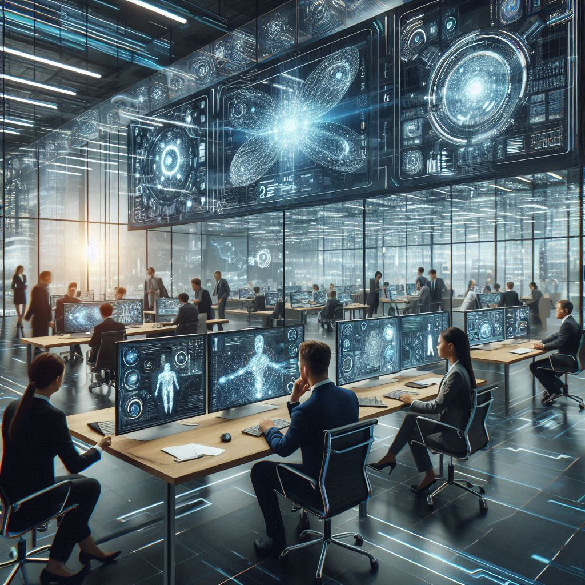

Who We Are
Welcome to NextWave AI, where we are at the forefront of artificial intelligence innovation. Our journey began with a vision to revolutionize the way humans interact with technology, making it more intuitive, adaptive, and empowering for everyone.
At our core, we believe in the transformative power of AI to enhance human capabilities and create a brighter future. Our team is a diverse collective of passionate innovators, engineers, and visionaries, all united by a shared commitment to pushing the boundaries of what AI can achieve.
📍 Our Mission: Our mission is to develop cutting-edge AI solutions that address real-world challenges and improve the quality of life for individuals and businesses alike. We strive to make AI accessible, ethical, and beneficial for all, ensuring that our technology is built with integrity and transparency.
📍 Our Value: Innovation: We are relentless in our pursuit of groundbreaking AI technologies that redefine possibilities. Integrity: We prioritize ethical considerations in every aspect of our work, from data privacy to AI fairness. Collaboration: We believe that the best solutions come from diverse perspectives and teamwork. Excellence: We are committed to delivering high-quality AI products and services that exceed expectations.
At NextWave AI, we harness the transformative power of artificial intelligence to drive innovation and streamline operations. We believe that AI isn’t just about smart algorithms—it’s about building solutions that empower people and organizations to thrive. Our expertise spans a range of domains, ensuring that we bring precision, efficiency, and ethical considerations into every project. Here’s a closer look at our six core areas of focus:
📍 Data Science: Our data scientists are experts in extracting insights from complex datasets, enabling data-driven decision-making and predictive analytics. In today’s data-driven landscape, insights are the cornerstone of innovation. Our Data Science and Analytics practice leverages advanced statistical models, machine learning techniques, and cutting-edge tools to transform raw data into transformative intelligence. We work closely with businesses to uncover hidden trends, predict future outcomes, and drive strategic decision-making.
📍 Machine Learning: We develop advanced machine learning models that can learn from data, identify patterns, and make intelligent decisions with minimal human intervention.
📍 Natural Language Processing: Our NLP solutions enable machines to understand, interpret, and respond to human language in a way that is both meaningful and contextually relevant. In an era defined by rapid technological advancement, our machine learning solutions empower businesses to transform raw data into actionable intelligence. We develop adaptive, predictive models that continuously learn and refine over time, ensuring that our solutions evolve to meet dynamic challenges. Our commitment to innovation and excellence drives us to craft machine learning solutions that not only meet today’s challenges but also set the stage for a smarter, more efficient future.
📍 Computer Vision: We leverage computer vision technologies to analyze and interpret visual data, enabling applications such as image recognition, object detection, and video analysis.
📍 Robotics: Our robotics team designs and builds intelligent robots that can perform tasks autonomously, enhancing productivity and efficiency in various industries.
📍 AI Ethics: We are committed to ensuring that our AI solutions are developed and deployed in an ethical manner, with a focus on fairness, transparency, and accountability.